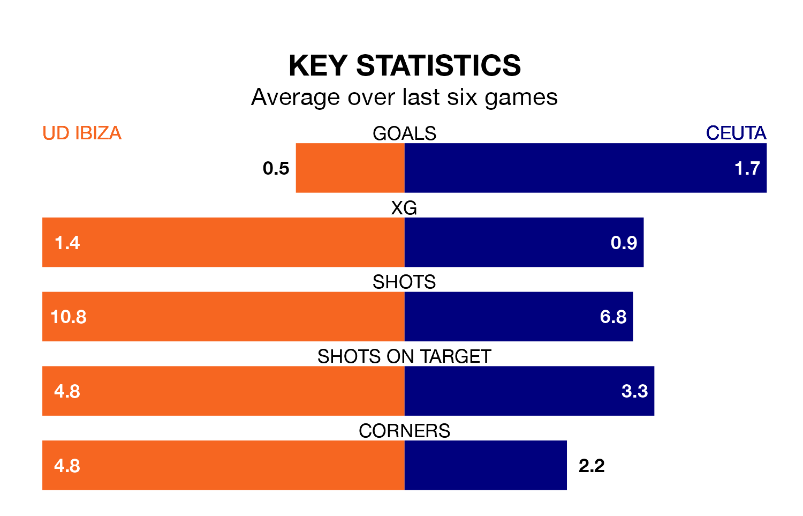

Ceuta visit UD Ibiza at Estadio Municipal de Can Misses on early Sunday on the back of three consecutive wins in Primera Division RFEF Group 2.
Ceuta have picked up 11 points from their last six games, and they face an Ibiza side who have lost their last two matches, and collected four points from the last possible 18.
With 46 goals in 28 games so far this season, Ibiza are the league's third-highest scorers with 1.6 goals per game. And they are conceding fewer than average, letting in 21 goals at a rate of 0.8 per game.
Ceuta are also above average scorers, with 1.2 goals per game, compared to a league average of 1.1. They have conceded 1.0 goal per game.
The hosts are third in the table after 28 games, of which they have won 16 and drawn nine, earning 57 points.
The away side are three places behind Ibiza in sixth, with 11 wins and 10 draws putting them on 43 points.
Ibiza's Alejandro Gallar Falguera is the league's most creative player, racking up six assists in 20 appearances so far this season.
For Ceuta, Cedric Wilfried Teguia Noubi has set up the most goals, having laid on three assists in 22 games.
Over the last two years, Ibiza and Ceuta have played each other twice. They won one each.
Their last meeting was on December 3, when Ibiza won 1-0 away.
Ibiza's last match was on March 17, a 0-0 draw against Real Murcia.
Ceuta beat Atlético Sanluqueño CF 3-0 last time out, also on March 17, with Aisar Ahmed Ahmed (two) and Alejandro Meléndez Ruiz on the scoresheet.
Updated: 10:19 (UTC), 22/03/24